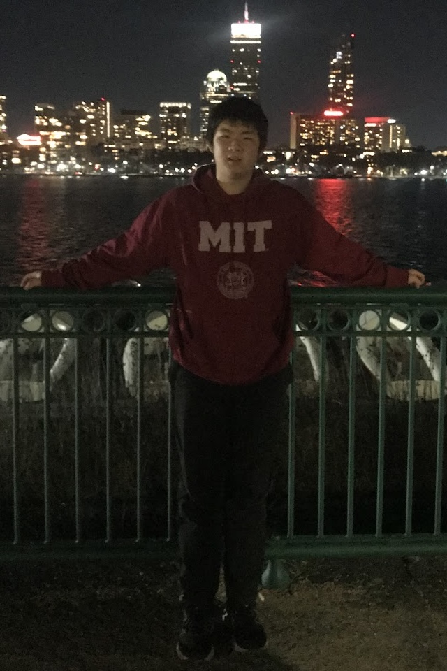

Halvorsen studio
Explore a chaotic attractor in 3D, experiment with color, and export your own PNG or SVG poster.
I'm interested in mathematics and computer science. I do research on graph coloring and build things with software and hardware. Online, I go by ConcaveTriangle.
I've done competition math and taken courses at Foothill College (Math 1A–1D and CS 2A). Current projects are below.

Explore a chaotic attractor in 3D, experiment with color, and export your own PNG or SVG poster.
A Raspberry Pi heads-up display with live sensors, navigation, weather, and destinations sent from a phone.
A personal AI agent with persistent conversations, resumable analysis, tools, and memory.
A language-model project exploring personal conversational style. I'm working on the second version.
A local-first Reddit feed and comment filter, with configurable preferences and optional semantic classification.
A Windows countdown overlay with visual HUD detection and manual hotkeys.
I'm currently working on Chromatic graph coloring research.
Xia Xu, Yang Liu, Michael Li, Xinyi Jerry Guo & Yong Yang
Communications in Algebra, 53(12), 5353–5357.
Improved bounds on the derived length of solvable linear groups, with an application to a dual version of Huppert’s conjecture on character codegrees.
PaperJiaxu Miao, Yiquan Wu & Xinyi Guo
2024 8th Asian Conference on Artificial Intelligence Technology, 283–290.
LawEducator combines a language model with retrieved legal knowledge, and explores applications in learning and student grouping.
OverviewI write solutions to AMC, AIME, and USA(J)MO problems on Art of Problem Solving (AoPS) as ConcaveTriangle. A few examples: